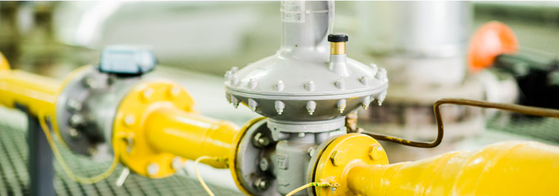
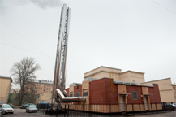
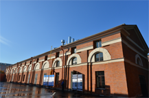
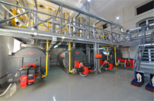

<!DOCTYPE html>
<html>
<head>
    <meta charset="UTF-8"/>
    <link href="css/style.css" rel="stylesheet" type="text/css">
    <link href='http://fonts.googleapis.com/css?family=PT+Sans+Narrow:400,700&subset=cyrillic-ext' rel='stylesheet'
          type='text/css'>
    <title>Центральный и адмиралтейский районы</title>
    <script src="js/jquery-1.11.1.min.js"></script>
    <script src="js/jquery.slides.min.js"></script>
    <!--[if IE 8]>
    <link href="css/ie-style.css" rel="stylesheet" type="text/css">
    <![endif]-->
</head>
<body>
<div class="main_container">
    <div class="background_header"></div>
    <div class="container_header wrapper">
        <div class="header">
            <div class="pte_logo">
                <a href="#">
                    
                </a>
            </div>
            <div class="choose_location">
                <a class="location_link" href="#">
                    <span class="dashed">Санкт-Петербург</span>
                    
                </a>
                <ul class="drop_down location_menu">
                    <li><a class="location_link hover" href="#">Cанкт Петербург</a></li>
                    <li><a class="location_link hover" href="#">Карелия</a></li>
                </ul>
            </div>
            <div class="icons_and_search">
                <a href="#">
                    <div class="icon home sprite">
                    </div>
                </a>
                <a href="#">
                    <div class="icon site_map sprite">
                    </div>
                </a>
                <a href="#">
                    <div class="icon mail sprite">
                    </div>
                </a>

                <div class="search-field">
                    <form name="search" action="/search" method="get" class="search_form">
                        <input type="text" name="q" id="search_on_site">
                        <button type="submit" name="search-button" id="search_button" class="sprite"></button>
                    </form>
                </div>

                <div class="phone_number">+7 (812) 334-50-60</div>
            </div>

        </div>
        <div class="nav_top">
            <ul class="menu_header">
                <li class="selected">
                    <a href="#">О компании</a>

                    <ul class="drop_down nav_menu">
                        <li>
                            <a href="#">История компании</a>
                        </li>
                        <li>
                            <a href="#">Руководство</a>
                        </li>
                        <li>
                            <a href="#">Сотрудники компании, награжденные почетными наградами </a>
                        </li>
                        <li>
                            <a href="#">Реконструкция</a>

                            <ul class="sub_drop_down">
                                <li><a href="#">Центральный и Адмиралтейский районы</a></li>
                                <li><a href="#">Петроградский район</a></li>
                                <li><a href="#">Курортный район</a></li>
                                <li><a href="#">Петродворцовый район</a></li>
                                <li><a href="#">Центральный и Адмиралтейский районы</a></li>
                                <li><a href="#">Пушкинский район</a></li>
                            </ul>
                        </li>
                        <li>
                            <a href="#">Раскрытие информации</a>
                        </li>
                        <li>
                            <a href="#">Вакансии</a>
                        </li>
                        <li>
                            <a href="#">Контакты</a>
                        </li>
                    </ul>
                </li>

                <li>
                    <a class="" href="#">Абоненту</a>
                    <ul class="drop_down nav_menu abonentu">
                        <li><a href="#">Тарифы</a></li>
                        <li><a href="#">Приборы учета</a></li>
                        <li><a href="#">Подключение к теплоснабжению</a></li>
                        <li><a href="#">Телефоны аварийных служб</a></li>
                        <li><a href="#">Часто задаваемые вопросы</a></li>
                    </ul>
                </li>
                <li>
                    <a href="#">Пресс-служба</a>
                    <ul class="drop_down nav_menu press">
                        <li><a class="press_menu" href="#">СМИ о нас</a></li>
                        <li><a class="press_menu" href="#">Контакты</a></li>
                    </ul>
                </li>
                <li>
                    <a class=href="#">Контакты</a></li>
            </ul>
        </div>
    </div>


    <div class="wrapper">

        <div class="image-text">
            
            <div class="reconstruction-inside summary">
                
                <p>Центральный район теплоснабжения – это 144 объекта, 135 котельных и 9 центральных тепловых пунктов
                    (ЦТП), расположенных в Центральном и Адмиралтейском районах. Из них 109 котельных и 4 ЦТП находятся
                    в Центральном районе, 26 котельных и 5 ЦТП расположены в Адмиралтейском районе. Протяженность тепловых
                    сетей в двух районах составляет 118,74 км в однотрубном исчислении</p>
            </div>
        </div>


    </div>


    <div class="background_gradient"></div>
    <div class="wrapper">
        <div class="navigation"><a href="#"><span class="uppercase">О компании</span></a> &#62; <a href="#"><span class="uppercase">Реконструкция</span></a>
            &#62; Центральный и Адмиралтейский районы </div>
        <div class="main_content main_text reconstruction-main">
            <h1 class="heading">Центральный и Адмиралтейский районы</h1>
            <p>Реконструкция системы теплоснабжения Центрального и Адмиралтейского районов началась в 2011 году. </p>
            <p>Вместо 129 старых объектов, ООО «Петербургтеплоэнерго» построило 86 новых. Из них 52 автоматизированные
                газовые котельные, 33 центральные тепловые пункты и тепловые сети от котельной Невский пр, д. 110.</p>
            <p>Общая установленная мощность всех объектов – 514,85 Вт. </p>
            <p>Протяженность перекладываемых тепловых сетей составила 134,83 км.</p>
            <p>Котельные «Петербургтеплоэнерго» в Центральном и Адмиралтейском районах отапливают большое количество социальных,
                культурных и исторически-значимых объектов: Государственный музей «Эрмитаж», Санкт-Петербургский государственный
                университет сервиса и экономики,  Санкт-Петербургский академический театр им. Ленсовета, Санкт-Петербургская
                детская школа искусств им. П.А. Серебрякова, Российский государственный педагогический университет им. А.И. Герцена,
                средняя общеобразовательная школа № 211 с углубленным изучением французского языка имени Пьера де Кубертена,
                Санкт-Петербургский государственный экономический университет, Всероссийский музей А.С. Пушкина, Государственная
                академическая Капелла Санкт-Петербурга, Комплексный центр социального обслуживания населения Адмиралтейского
                района, Национальный минерально-сырьевой университет «Горный», ОАО «Российские железные дороги», Российский
                государственный музей Арктики и Антарктики, Санкт-Петербургское государственное унитарное предприятие
                «Петербургский метрополитен». </p>
            <p>В 2014 году планируется закрыть 21 котельную и технически  перевооружить 18 объектов теплоснабжения:</p>

                <p>- 5 котельных;</p>
                <p>- 13 центральных тепловых пунктов (ЦТП).</p>
            <p>Установленная мощность 18 объектов теплоснабжения составит: 69,89 МВт. Планируется выполнить перекладку тепловых
                сетей: 15,09 км (в однотрубном исчислении). </p>
            <p>На этом программа реконструкции в Центральном и Адмиралтейском районах будет завершена.</p>
            <p>Общая стоимость работ по программе реконструкции составит 5 375, 21 млн рублей.</p>
             
            
        </div>

        <div class="aside">
            <ul><li class="selected"><a href="#">Центральный и Адмиралтейский районы</a></li>
                <li><a href="#">Петроградский район</a></li>
                <li><a href="#">Курортный район</a></li>
                <li><a href="#">Петродворцовый район</a></li>
                <li><a href="#">Пушкинский район</a></li>
            </ul>
        </div>
    </div>
    <div class="footer">
        <div class="wrapper">
            <div class="address white">
                <span>194044 Санкт-Петербург, Б.
                    Сампсониевский пр., д. 60</span>
            </div>
            <div class="phone white"><span>+7 (812)
                    334 50 60</span>
            </div>
        </div>
    </div>
<div class="on_top"><a href="#" onclick="window.scrollTo(0,0); return false;">наверх</a></div>
</div>
<script src="js/main.js"></script>
</body>
</html>